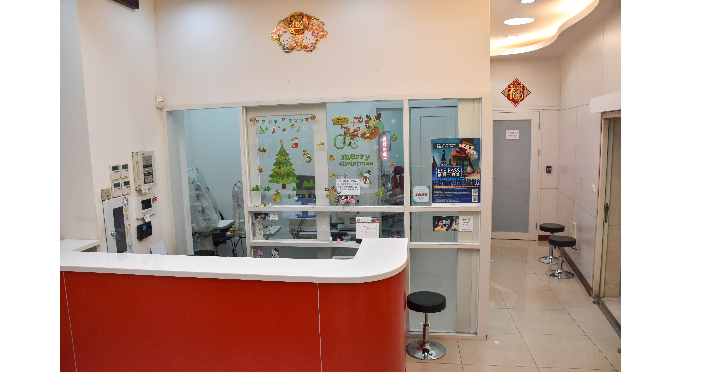
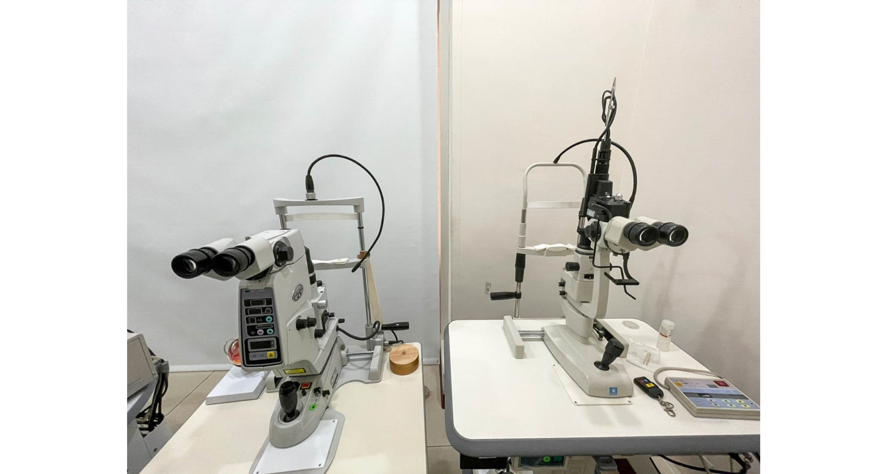
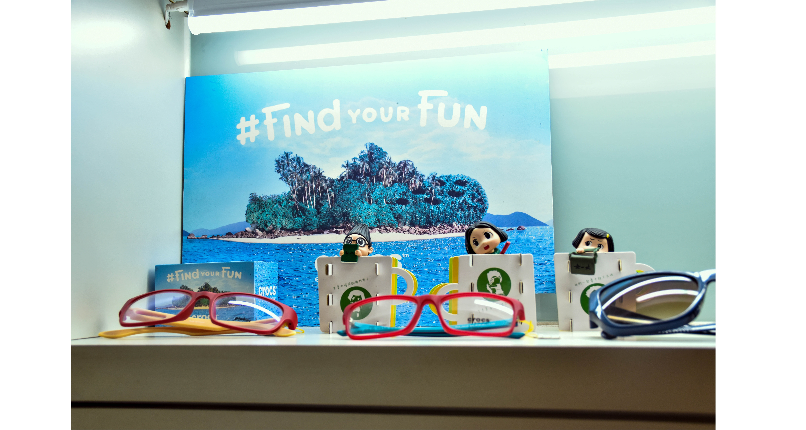

日光眼科成立於2013年，院長林雅雯醫師，曾獲得商業周刊百大良醫推薦，白內障手術成功案例超過數千例。初期由前林口長庚醫院醫療團隊聯合主治，後續更進一步禮聘醫學中心現任主治醫師，銜接基層與醫院，期待提供民眾更完善的醫療服務。
為提供與教學醫院同等級的專業醫療服務，引進醫院等級的高階眼科儀器設備，如：光學視網膜斷層掃描儀(OCT)，角膜地形圖儀，蔡司自動視野檢查儀，前房雷射儀，後房雷射儀等，提供最精密高端的檢測與治療給每一位患者。
護理專業由任職眼科經驗超過20年的護理長，帶領資深的護理師，專業的驗光師團隊執行檢查。同時，日光眼科以最高標準建構醫學中心等級的無塵手術室，採用高於HEPA等級的ULPA(ultra low particulate air)1000級空氣濾清系統,德國萊卡(Leica)高階手術顯微鏡及ups不斷電系統等設備，將病患手術的風險與感染機率降到最低。
我們堅持提供最專業的醫療技術，與優質的團隊服務。每一位走進日光眼科的患者就像是我們的家人與朋友，值得最專業的診療與照護！
捷運
板南藍線（往亞東醫院OR頂埔）搭至龍山寺站，於3號出口出來右手邊即為日光眼科
自行開車
起點：走國道1號→靠右行駛走五股楊梅高架段→在環河北路出口下交流道→走環河快速道路於桂林路出口下交流道→看到桂林路向左轉→看到康定路右轉→康定路與和平西路三段交接口
停車場
艋舺公園（地下停車場）
大理街平面停車場
火車
火車於萬華火車站下車，前方為康定路向北步行約3分鐘到和平西路交接口，右前方即可看到日光眼科
連絡電話:
(02)2306-3789
地址:台北市萬華區和平西路三段85號